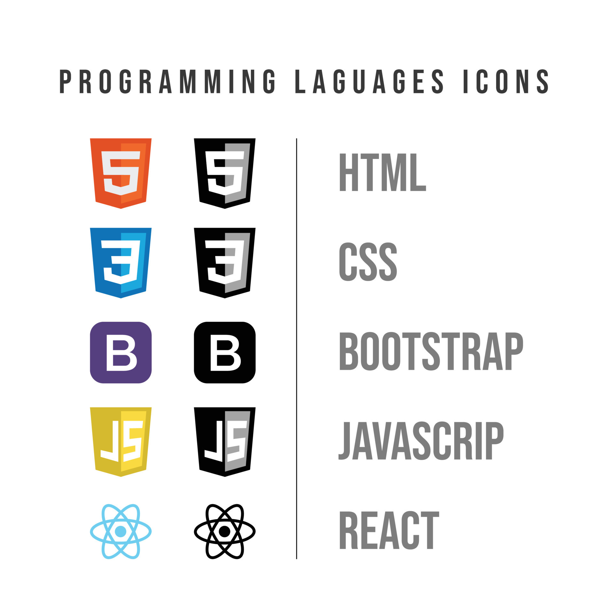

Mi nombre es Evelin Andrea Checa, soy programadora Trainee.
Tengo muchas ganas de aprender y Crecer en el mundo de la programacion
Soy una persona comprometida, responsable,flexible y perseverante.
Me gusta trabajar en equipo, ya que podemos compartir diferentes puntos de vista de la misma problematica, resultando en una experiencia enriquecedora.
Disfruto de viajar y conocer nuevos lugares, me encanta caminar en la playa y en las sierras, compartiendo con mi familia.
Con respecto, a los proyectos realizados educativos.Realize una aplicacion para una farmacia con .NET y la base datos fue realizada con Microsoft SQL Server.
Tambien realize una aplicacion de consola con python con Visual Code y la base de datos con MySQL
